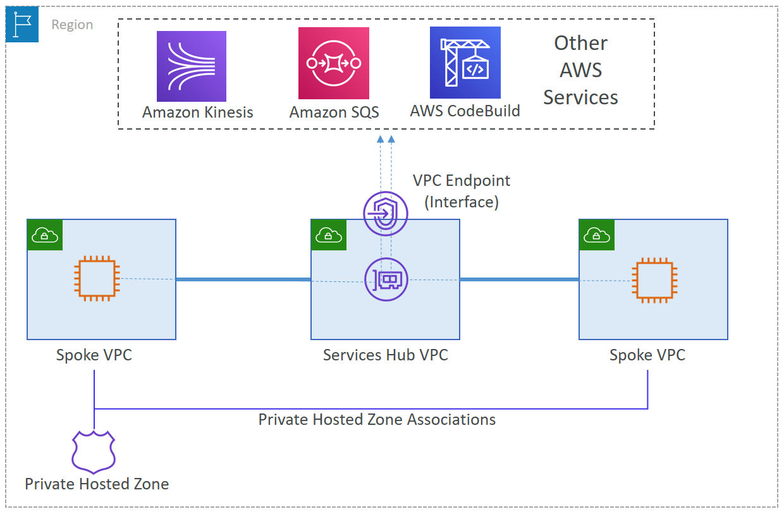

AWS Certified Advanced Networking - Specialty (ANS-C01)
Centralized VPC Interface Endpoints - Introduction and Overview
Core Problem Statement
- Business Challenges:
- Security requirements for AWS service access
- Cost optimization for multiple VPCs
- Maintenance overhead reduction
- Private access to AWS services
VPC Endpoints Background
- Key Characteristics:
- Powered by AWS PrivateLink
- Private connections to AWS services
- No internet gateway required
- No NAT gateway needed
- Types of Endpoints:
- Gateway Endpoints:
- For S3 and DynamoDB
- Regional access only
- Interface Endpoints:
- For AWS services
- For endpoint services
- Powered by PrivateLink
Solution Overview
- Proposed Architecture:
- Hub and spoke design
- Centralized interface endpoints in hub VPC
- Spoke VPCs access through hub
- Cost-efficient for multiple VPCs
- Key Benefits:
- Reduced endpoint costs
- Simplified management
- Enhanced security
- Centralized control
Exam Tips
- Remember:
- VPC endpoints eliminate need for:
- Internet Gateway
- NAT Gateway
- VPN connections
- Direct Connect
- Key Differences:
- Gateway vs Interface endpoints
- Regional vs service-specific access
- Cost implications
- Architecture Focus:
- Hub-spoke model benefits
- Centralization advantages
- Security improvements
- Cost optimization
Centralized VPC Interface Endpoints - Architecture and Design Considerations
Core Architecture Components
- Hub VPC (Shared Services):
- Contains interface endpoints
- Acts as central connectivity point
- Hosts private subnets for endpoints
- Security group controls
- Spoke VPCs:
- Workload VPCs
- Connect to hub via VPC peering
- Share interface endpoints
- Route traffic through hub

Figure: VPC Endpoint
Key Design Considerations
- Connectivity Options:
- VPC Peering:
- Primary connection method
- Direct spoke-to-hub connectivity
- Alternative: Transit Gateway
- For more complex architectures
- When many VPCs are involved
- DNS Resolution:
- Private DNS for Interface Endpoints:
- Works within same VPC
- Doesn't resolve across peered VPCs
- Private Hosted Zone Solution:
- Required for cross-VPC resolution
- Must match AWS service endpoint name
- Associates with all spoke VPCs
External Access Considerations
- Hybrid Connectivity:
- Site-to-Site VPN access
- Direct Connect support
- Must terminate in shared services VPC
Service Limits and Constraints
- Critical Limits:
- VPC Peering:
- 50 active connections per VPC (default)
- Can increase to 125
- Private Hosted Zones:
- 100 associated VPCs per zone
- Limit can be increased
- Interface Endpoints:
- 50 per VPC (default)
- 10 Gbps per endpoint ENI (can burst)
Exam Tips
- Architecture Focus:
- Hub-spoke model implementation
- DNS resolution requirements
- Connectivity options
- Service limits
- Key Numbers:
- 50 VPC peering connections (default)
- 100 VPCs per Private Hosted Zone
- 10 Gbps per endpoint ENI
- 50 interface endpoints per VPC
- Design Decisions:
- When to use VPC peering vs Transit Gateway
- DNS resolution strategy
- High availability considerations
- Scalability limits
Centralized VPC Interface Endpoints - Implementation Guide
Part 1: Basic Setup
- Initial Infrastructure:
- 1. Create Hub VPC:
- New VPC for shared services
- Private subnet for endpoints
- Appropriate CIDR planning
- 2. Interface Endpoint Configuration:
- Create endpoint for required service (e.g., SQS)
- Select appropriate subnet
- Configure security group:
- Inbound HTTPS from spoke VPC CIDRs
- Default outbound rules (no changes needed)
- Connectivity Setup:
- 3. VPC Peering:
- Establish peering connections
- Hub to each spoke VPC
- Accept peering requests
- 4. Route Table Configuration:
- Hub VPC routes to spoke CIDRs
- Spoke VPC routes to hub CIDR
- Via VPC peering connection
Part 2: DNS Resolution Setup
- Private DNS Configuration:
- 1. Endpoint Preparation:
- Disable Private DNS for interface endpoint
- Required if previously enabled
- 2. Private Hosted Zone:
- Create zone matching service name
- Example: sqs.us-east-1.amazonaws.com
- Create A record (alias):
- Points to endpoint DNS
- Enables service resolution
- 3. VPC Associations:
- Associate all spoke VPCs
- Cross-account requires CLI/API
- Enables DNS resolution
Validation and Testing
- Basic Connectivity:
- Test with endpoint URL:
- Use --endpoint-url parameter
- Verify direct endpoint access
- DNS Resolution:
- Test service endpoint resolution:
- Should resolve without endpoint URL
- Requires AWS CLI version 2
- Verify from each spoke VPC
Implementation Best Practices
- High Availability:
- Use multiple AZs for endpoints
- Minimum of two AZs recommended
- Consider endpoint redundancy
- Security:
- Restrict endpoint policies
- Precise security group rules
- Consider AWS Principal restrictions
Exam Tips
- Implementation Order:
- Infrastructure before connectivity
- Connectivity before DNS
- Testing after each phase
- Critical Configurations:
- Security group settings
- Route table entries
- Private DNS setup
- VPC associations
- Common Issues:
- DNS resolution failures
- Security group misconfigurations
- Route table oversights
- Cross-account limitations
Centralized VPC Interface Endpoints - Cleanup, Considerations, and Conclusion
Resource Cleanup Process
- Ordered Cleanup Steps:
- 1. Workload Resources:
- Terminate EC2 instances in spoke VPCs
- Remove service resources (e.g., SQS queues)
- 2. Networking Components:
- Delete interface endpoints in hub VPC
- Remove VPC peering connections
- Delete Route 53 Private Hosted Zones
- 3. Service Resources:
- Remove AWS service resources
- Delete associated configurations
Design Considerations Summary
- Scalability Aspects:
- VPC Peering Limits:
- 50 active connections (default)
- Maximum 125 after increase
- DNS Management:
- 100 VPCs per Private Hosted Zone
- Limit can be increased
- Performance:
- 10 Gbps per endpoint ENI
- Supports bursting
Advanced Use Cases
- Hybrid Connectivity:
- On-premises Access:
- Via AWS Transit Gateway
- Through Direct Connect
- Using Site-to-Site VPN
- DNS Resolution:
- Route 53 Resolver integration
- Hybrid DNS setup
Solution Benefits
- Key Advantages:
- Cost Optimization:
- Reduced endpoint deployments
- Centralized management
- Security:
- Private AWS service access
- Centralized control
- Operational:
- Simplified management
- Reduced complexity
Exam Tips
- Remember:
- Resource Dependencies:
- Cleanup order matters
- Service relationships
- Design Limitations:
- Service quotas
- Scaling considerations
- Integration Points:
- Hybrid connectivity options
- DNS resolution requirements
- Solution Benefits:
- Cost efficiency
- Security improvements
- Operational simplification
- Centralized management
Additional Resources
- AWS CDK implementation available on GitHub
- Related blog posts for Transit Gateway integration
- AWS PrivateLink documentation
- Route 53 Resolver documentation
Centralized VPC Interface Endpoints - Comprehensive Study Guide Summary
1. Core Concepts
- VPC Interface Endpoints:
- Powered by AWS PrivateLink
- Private access to AWS services
- No IGW or NAT required
- Highly available and redundant
- Architecture Model:
- Hub-and-spoke design
- Centralized endpoints in hub VPC
- Spoke VPCs connect via peering
- Shared endpoint access
2. Critical Technical Details
- Service Limits:
- VPC Peering: 50 connections (up to 125)
- Private Hosted Zones: 100 VPCs
- Interface Endpoints: 50 per VPC
- Endpoint Performance: 10 Gbps per ENI
- DNS Configuration:
- Private DNS disabled in hub
- Private Hosted Zone required
- Must match service endpoint name
- Associate with all spoke VPCs
3. Implementation Requirements
- Infrastructure Setup:
- Hub VPC with private subnets
- Interface endpoints in hub
- VPC peering connections
- Route table configurations
- Security Configuration:
- Security group rules for HTTPS
- Endpoint policies
- Route table entries
- Access controls
4. Key Design Considerations
- High Availability:
- Multiple AZ deployment
- Redundant endpoints
- Proper route configuration
- Scalability:
- Service quotas and limits
- Performance requirements
- Growth planning
5. Common Use Cases
- Scenarios:
- Multi-VPC AWS service access
- Centralized security control
- Cost optimization
- Hybrid connectivity
6. Exam Focus Areas
- Must Know:
- Architecture Components:
- Hub-spoke model
- VPC peering requirements
- DNS resolution setup
- Technical Limits:
- Service quotas
- Performance capabilities
- Scaling limitations
- Implementation Order:
- Infrastructure first
- Connectivity second
- DNS configuration last
- Common Scenarios:
- Cost optimization requirements
- Security compliance needs
- Multi-VPC architectures
- Hybrid connectivity solutions
7. Alternative Solutions
- Consider When:
- Transit Gateway for complex networks
- Direct endpoint deployment for simple cases
- Hybrid DNS requirements
- Cross-account access needs
DNS Resolution in Centralized Interface Endpoints - Deep Dive
DNS Resolution Behavior
- Private DNS Enabled (Default):
- Works only within same VPC:
- Resolves AWS service endpoints (e.g., sqs.us-east-1.amazonaws.com)
- Points to interface endpoint IP
- Does NOT work across VPC peering
- Problem in Hub-Spoke Model:
- Spoke VPCs can't resolve endpoint DNS
- DNS queries fail in spoke VPCs
- Requires manual endpoint URL specification
Solution Components
- Step 1: Disable Private DNS:
- Turn off Private DNS for interface endpoint
- Prevents DNS conflicts
- Allows custom DNS configuration
- Step 2: Private Hosted Zone:
- Create zone matching service name:
- Example: sqs.us-east-1.amazonaws.com
- Points to interface endpoint DNS
- Associates with all VPCs (hub and spokes)
AWS CLI Endpoint URL Parameter
- When Required:
- Private DNS disabled and no Private Hosted Zone:
- Must specify full endpoint URL
- Uses --endpoint-url parameter
- Example:
- --endpoint-url https://vpce-xxxxx.sqs.us-east-1.vpce.amazonaws.com
- When Not Required:
- Private DNS enabled (same VPC), OR
- Private Hosted Zone configured correctly
- AWS CLI version 2 or newer
Exam Tips
- Remember:
- DNS Resolution Flow:
- Private DNS only works in same VPC
- VPC peering doesn't extend Private DNS
- Private Hosted Zone required for cross-VPC resolution
- CLI Behavior:
- Endpoint URL needed without DNS resolution
- Version 2 required for service endpoints
- Legacy endpoints different in older CLI versions
- Common Scenarios:
- Troubleshooting DNS resolution
- Setting up cross-VPC access
- CLI configuration requirements
- Migration from older setups
Cross-Region AWS PrivateLink - Introduction and Overview
Core Problem Statement
- Previous Limitations:
- PrivateLink restricted to same region
- Complex workarounds needed for cross-region access
- Required additional infrastructure in each region
- Higher costs and operational complexity
- Previous Solutions:
- Inter-region VPC peering
- Transit Gateway peering
- Required:
- Non-overlapping CIDRs
- AZ alignment
- Complex network security
New Solution Benefits
- Key Features:
- Native cross-region connectivity
- Simple endpoint-based access
- No infrastructure replication needed
- Secure by design
- Architectural Improvements:
- No AZ alignment required
- Minimum 2 AZs for NLB (provider)
- Flexible AZ selection for consumers
- Automatic failover handling
Use Cases
- Primary Scenarios:
- Global SaaS offerings
- Single-region service providers
- Worldwide consumer access
- Simplified service deployment
Exam Tips
- Key Points:
- Cross-region support is new feature
- Requires minimum 2 AZs for providers
- No AZ alignment needed
- Simplifies global service access
- Architecture Focus:
- Understanding old vs new approach
- Benefits of native support
- High availability considerations
- Operational simplification
Cross-Region PrivateLink - Security Controls and Permissions
Core Security Design
- Security-First Approach:
- Defense in depth model
- Explicit permissions required
- Both provider and consumer must opt-in
- Granular access controls
Key Permission Components
- 1. Cross-Region Opt-In:
- New permission: vpce:AllowMultiRegion
- Separate from standard ec2 namespace
- Required for cross-region operations
- Default to in-region only without it
- 2. Access Control Flag:
- ec2:VpceMultiRegion boolean key
- Indicates:
- Service has cross-region enabled
- Endpoint connects to remote service
- 3. Regional Controls:
- Provider Control (ec2:VpceSupportedRegion):
- Restricts allowed consumer regions
- Defines service accessibility
- Regional allowlist capability
- Consumer Control (ec2:VpceServiceRegion):
- Controls accessible provider regions
- Restricts endpoint creation
- Regional blocklist capability
Opt-In Regions Consideration
- Special Requirements:
- Applies to regions launched after March 20, 2019
- Both parties must opt-in to these regions
- Prevents accidental region access
- Additional security layer
Implementation Best Practices
- Policy Structure:
- Layer permissions incrementally
- Start with minimal access
- Use explicit denies for restrictions
- Document regional choices
- Security Controls:
- Implement all available controls
- Regular policy reviews
- Monitor cross-region access
- Document exceptions
Exam Tips
- Critical Permissions:
- vpce:AllowMultiRegion - base permission
- ec2:VpceMultiRegion - access flag
- ec2:VpceSupportedRegion - provider control
- ec2:VpceServiceRegion - consumer control
- Key Concepts:
- Explicit opt-in required
- Multiple control layers
- Regional restrictions
- Opt-in region requirements
- Common Scenarios:
- Regional access control
- Permission configuration
- Security boundary setup
- Policy troubleshooting
Cross-Region PrivateLink - Implementation Guide
Service Provider Setup
- Step 1: Create PrivateLink Service:
- Prerequisites:
- Operational NLB required
- vpce:AllowMultiRegion permission
- Minimum 2 AZs for NLB
- Configuration Steps:
- Select 'Network' load balancer type
- Choose appropriate NLB
- Configure in multiple AZs
- Step 2: Configure Supported Regions:
- Select consumer regions from dropdown
- Optional settings:
- Acceptance required (optional)
- IPv4 configuration
- Additional VPC settings
- Step 3: Service Sharing:
- Wait for 'Available' state
- Share service name with consumers
- Monitor regional availability
Service Consumer Setup
- Step 1: Service Discovery:
- Access Requirements:
- Service name from provider
- Proper permissions
- Supported region access
- Configuration Steps:
- Enable cross-region endpoint
- Specify provider's region
- Verify service name
- Step 2: Interface Endpoint Creation:
- VPC Configuration:
- Select target VPC
- Choose desired AZs
- No AZ alignment needed
- DNS Configuration:
- Regional DNS name generated
- AZ-specific DNS names provided
- Optional Private DNS support
Important Considerations
- Provider Considerations:
- No limit on supported regions
- Must be within same partition
- NLB-based services only
- AWS services not supported
- Consumer Considerations:
- Interface endpoints only
- Counts toward VPC quotas
- Regional DNS recommended
- Consider HA requirements
Exam Tips
- Implementation Order:
- Provider setup first
- Region configuration
- Consumer verification
- Endpoint creation
- Key Requirements:
- NLB prerequisite
- Multiple AZs
- Proper permissions
- Service verification
- Common Scenarios:
- Service setup troubleshooting
- DNS configuration
- Regional access setup
- Quota management
Cross-Region PrivateLink - Considerations and Conclusions
Provider Considerations
- Regional Support:
- No limit on number of supported regions
- Must be within same partition
- Can dynamically add/remove regions
- Service Limitations:
- NLB-based services only
- Not supported:
- AWS services
- Marketplace services
- Other load balancer types
- Access Management:
- Region removal implications:
- Prevents new endpoint creation
- Existing endpoints persist
- Manual rejection if needed
Consumer Considerations
- Endpoint Restrictions:
- Interface endpoints only
- Gateway endpoints not supported
- Counts toward VPC quotas
- Quota Management:
- Interface endpoints per VPC limit
- Applies to:
- Local region endpoints
- Remote region endpoints
- Quota increase possible
Best Practices
- High Availability:
- Use multiple AZs
- Implement proper health checks
- Plan for regional failover
- Monitor endpoint health
- DNS Configuration:
- Use regional DNS names
- Consider Private DNS needs
- Plan DNS resolution strategy
Key Benefits Summary
- Operational Benefits:
- Simplified global service delivery
- Reduced infrastructure requirements
- Lower operational complexity
- Enhanced security control
- Business Benefits:
- Cost-effective global reach
- Faster service deployment
- Improved customer experience
- Simplified management
Exam Tips
- Remember:
- Service Type Restrictions:
- NLB only
- No AWS or Marketplace services
- Quota Considerations:
- Combined endpoint counting
- Quota increase options
- Access Management:
- Region removal effects
- Existing endpoint persistence
- Common Scenarios:
- Global service deployment
- Regional access management
- Quota planning
- High availability design
Cross-Region PrivateLink - Comprehensive Study Guide Summary
1. Core Concepts and Evolution
- Historical Context:
- Previous Limitations:
- Same-region only
- Complex workarounds needed
- Required VPC/TGW peering
- New Capabilities:
- Native cross-region support
- No AZ alignment needed
- Simplified architecture
2. Security Framework
- Critical Permissions:
- vpce:AllowMultiRegion - base permission
- ec2:VpceMultiRegion - cross-region flag
- ec2:VpceSupportedRegion - provider control
- ec2:VpceServiceRegion - consumer control
- Security Controls:
- Explicit opt-in required
- Regional restrictions possible
- Opt-in region considerations
- Defense in depth approach
3. Implementation Requirements
- Provider Requirements:
- NLB-based service only
- Minimum 2 AZs
- Proper permissions
- Region configuration
- Consumer Requirements:
- Interface endpoints only
- Service verification
- VPC and subnet selection
- DNS configuration
4. Key Limitations
- Service Restrictions:
- No AWS services support
- No Marketplace services
- Same partition requirement
- NLB requirement
- Quota Considerations:
- Combined endpoint counting
- VPC endpoint limits
- Regional quotas
- Quota increase options
5. Best Practices
- Architecture:
- Multiple AZ deployment
- Regional DNS usage
- Proper health checks
- High availability design
- Operations:
- Monitor endpoint health
- Plan for regional failover
- Manage quotas proactively
- Regular security reviews
6. Exam Focus Areas
- Must Know:
- Permission Structure:
- Required permissions
- Security controls
- Regional restrictions
- Technical Requirements:
- NLB requirement
- AZ considerations
- Service limitations
- Implementation Details:
- Setup process
- DNS configuration
- Quota management
- Common Scenarios:
- Global service deployment
- Security configuration
- Regional access management
- Troubleshooting setup issues
AWS Transit Gateway with PrivateLink and Route 53 Resolver - Introduction
Core Problem Statement
- Business Challenge:
- Need to share PrivateLink endpoints across:
- Multiple VPCs
- On-premises environments
- Different AWS accounts
- Goals:
- Reduce number of VPC endpoints
- Simplify endpoint deployment
- Optimize costs at scale
Architecture Complexity
- Simple Cases:
- Endpoint services behind NLB:
- Public DNS entries
- Only needs layer-3 connectivity
- Works with VPC peering or Transit Gateway
- Complex Cases:
- AWS Services endpoints
- AWS PrivateLink SaaS endpoints
- Requires:
- Private DNS handling
- Route 53 Resolver integration
- Private Hosted Zone management
Solution Components
- Key Services:
- AWS Transit Gateway
- AWS PrivateLink
- Route 53 Resolver
- Private Hosted Zones
- Integration Benefits:
- Unified name resolution
- Centralized connectivity
- Simplified management
- Cost optimization
Exam Tips
- Key Concepts:
- Private DNS limitations
- Service types complexity differences
- Integration requirements
- Resolution patterns
- Architecture Focus:
- Connectivity requirements
- DNS resolution flow
- Service integration points
- Scalability considerations
AWS Transit Gateway Integration - DNS Configuration and Architecture
Private DNS Configuration
- Initial Setup:
- Step 1: Disable Private DNS on VPC endpoint
- Access VPC console
- Select Endpoints section
- Uncheck "Enable Private DNS Name"
- Required for custom DNS configuration
- Step 2: Create Custom Private Hosted Zone
- Match full service endpoint name
- Example: codebuild.us-east-1.amazonaws.com
- Create alias record to regional endpoint
- Reference AWS Regions and Endpoints documentation
VPC-to-VPC Configuration
- Requirements:
- Layer-3 Connectivity:
- Transit Gateway, or
- VPC peering
- Private Hosted Zone Sharing:
- Same account: Use Route 53 console
- Different accounts: Use AWS CLI/SDK
- Resolution Flow:
- DNS query from spoke VPC
- Resolution through shared PHZ
- Returns VPC endpoint private IPs
- Traffic flows through Transit Gateway
On-Premises Integration
- Components Required:
- Connectivity:
- AWS VPN or Direct Connect
- Transit Gateway or Virtual Private Gateway
- Route 53 Resolver:
- Inbound endpoint in same VPC as endpoint
- Conditional forwarding from on-premises
- Points to Resolver endpoint IPs
- Resolution Process:
- On-premises DNS query
- Forwarded to Route 53 Resolver
- Resolves to endpoint IPs
- Traffic flows through Transit Gateway
Exam Tips
- Critical Configuration Points:
- Private DNS must be disabled first
- PHZ name must match service endpoint
- Alias record points to regional endpoint
- Proper layer-3 connectivity required
- Architecture Patterns:
- VPC-to-VPC via PHZ sharing
- On-premises via Route 53 Resolver
- Cross-account via CLI/SDK
- Resolution flow differences
- Common Scenarios:
- Multi-VPC endpoint sharing
- Hybrid DNS resolution
- Cross-account access
- DNS configuration troubleshooting
AWS Transit Gateway Integration - Design Considerations and Limitations
High Availability Best Practices
- Multi-AZ Deployment:
- VPC Endpoints:
- Minimum two AZs required
- Eliminates single points of failure
- Ensures continuous availability
- Route 53 Resolver:
- Inbound endpoints in multiple AZs
- Redundant configuration
- Automatic failover capability
DNS Resolution Best Practices
- Instance DNS Configuration:
- Use AmazonProvidedDNS (.2 resolver):
- Highest availability
- Best scalability
- Lowest latency
- Recommended for EC2 instances
Service Limits
- Route 53 Resolver:
- DNS Query Limits:
- 10,000 queries/second per ENI
- Scalable with additional ENIs
- One ENI per AZ
- Private Hosted Zones:
- 100 associated VPCs per PHZ
- Can request increase
- Consider for large deployments
- VPC Endpoints:
- 20 endpoints per VPC (default)
- Can increase to 40
- Plan capacity accordingly
- Performance:
- 10 Gbps per ENI
- Supports bursting
Critical Pitfalls to Avoid
- DNS Configuration Mistakes:
- Never configure:
- Resolver rules to .2 resolver
- DNS forwarding between VPCs
- Resolver for VPC to PHZ resolution
- Circular references between endpoints
- Performance Issues:
- .2 resolver limited to 1024 queries/second
- EC2 instances should not use inbound endpoints
Exam Tips
- Remember These Limits:
- Query Limits:
- 10,000/second per ENI (Resolver)
- 1024/second (.2 resolver)
- Resource Limits:
- 100 VPCs per PHZ
- 20-40 endpoints per VPC
- 10 Gbps per endpoint ENI
- Critical Don'ts:
- No resolver rules to .2
- No VPC-to-VPC DNS forwarding
- No circular references
- No inbound endpoints for EC2
- Best Practices:
- Multi-AZ deployments
- Use AmazonProvidedDNS
- Plan for scale
- Monitor limits
Transit Gateway, PrivateLink, and Route 53 Resolver Integration - Comprehensive Summary
 Figure: VPC Endpoint - Transit Gateway
Figure: VPC Endpoint - Transit Gateway
1. Core Architecture Components
- Key Services:
- Transit Gateway:
- Central connectivity hub
- Enables VPC and on-premises routing
- Layer-3 connectivity
- PrivateLink:
- Private endpoint access
- AWS services and SaaS integration
- No public internet exposure
- Route 53 Resolver:
- Hybrid DNS resolution
- Inbound/Outbound endpoints
- Conditional forwarding
2. DNS Configuration Requirements
- Critical Setup Steps:
- Disable Private DNS on endpoints
- Create custom Private Hosted Zones
- Match service endpoint names exactly
- Configure alias records correctly
- Resolution Patterns:
- VPC-to-VPC:
- PHZ sharing
- Transit Gateway routing
- On-premises:
- Route 53 Resolver endpoints
- Conditional forwarding
3. Service Limits and Quotas
- Critical Numbers:
- DNS Queries:
- 10,000/second per Resolver ENI
- 1024/second for .2 resolver
- Resource Limits:
- 100 VPCs per PHZ
- 20-40 endpoints per VPC
- 10 Gbps per endpoint ENI
4. Best Practices
- High Availability:
- Multi-AZ deployments
- Redundant endpoints
- Use AmazonProvidedDNS
- Proper capacity planning
- What to Avoid:
- Resolver rules to .2 resolver
- VPC-to-VPC DNS forwarding
- Circular endpoint references
- EC2 using inbound endpoints
5. Exam Focus Areas
- Architecture Understanding:
- Service integration points
- DNS resolution flows
- Connectivity requirements
- Security considerations
- Technical Details:
- Service limits and quotas
- Configuration requirements
- Best practices
- Common pitfalls
- Common Scenarios:
- Multi-VPC endpoint sharing
- Hybrid DNS resolution
- Cross-account access
- Troubleshooting issues
6. Key Benefits
- Operational:
- Reduced endpoint count
- Simplified management
- Centralized control
- Cost optimization
- Technical:
- Unified DNS resolution
- Scalable architecture
- High availability
- Secure connectivity
- https://aws.amazon.com/jp/blogs/networking-and-content-delivery/centralize-access-using-vpc-interface-endpoints/
- https://aws.amazon.com/jp/blogs/networking-and-content-delivery/introducing-cross-region-connectivity-for-aws-privatelink/
- https://aws.amazon.com/jp/blogs/networking-and-content-delivery/integrating-aws-transit-gateway-with-aws-privatelink-and-amazon-route-53-resolver/